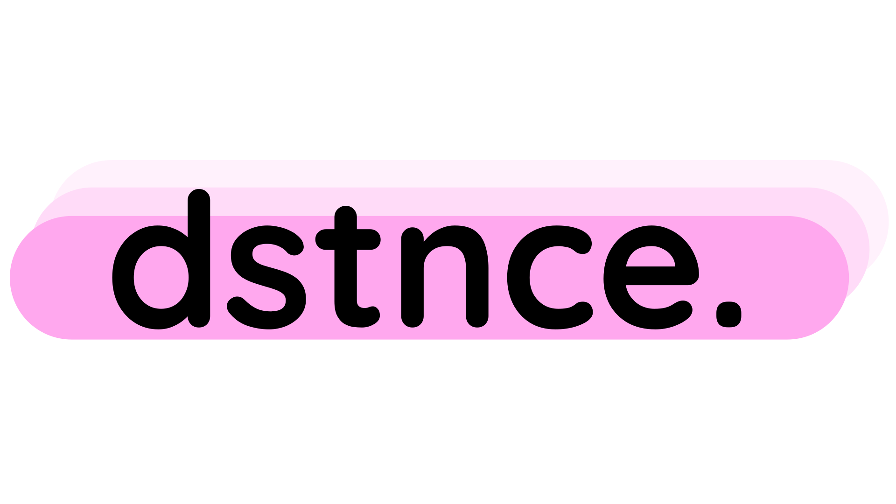
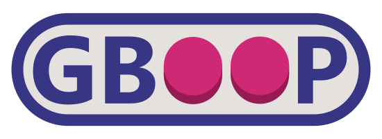

dstnce.
A platforming adventure game where you work your day job, clean up your room, look after your plant, and so much more as you try to get by one step at a time. it is what you make of it, so make the most of it.
dstnce was a solo project created in the span of 2 months where I created everything from the music to the game systems myself. This served primarily as a learning experience for me, giving me the space to learn more about things such as games systems design, audio programming with FMOD, and accessible design.
stopn't

A fast paced futuristic racer where you must go as fast as possible, not crash, and survive for as long as you can.
stopn't is a jam game made for GMTK2020 over the course of a weekend. I spearheaded the 3D art and level design, working on this project with cinder foster-smith, cat flynn, and cai jones.
stopn't placed 700th overall and 520th in fun out of a total of 5,397 entries.
gboop
A work in progress gameboy emulator, developed by both myself and cinder foster-smith as a way to explore and learn more about the GameBoy and low level computer emulation in general. Plus, it's just fun!
rusty renderer
My work in progress software renderer written in rust with the purpose of learning more about both rust and graphics programming.